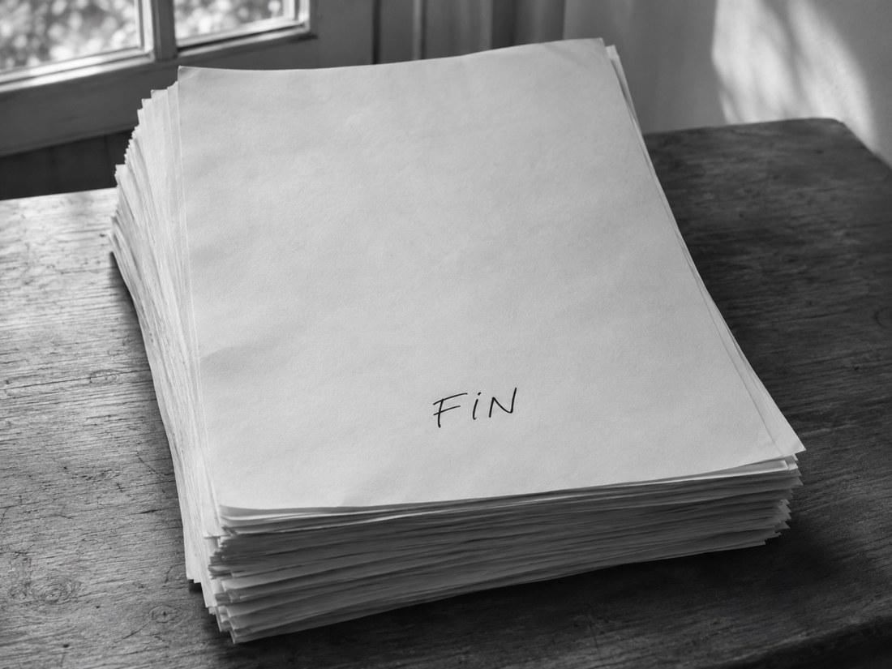

Trouver l’entrée
Le premier jet est achevé.
Je savais le sujet depuis longtemps : la fracture des sociétés, leurs déchirures silencieuses, cette cassure progressive qu’on ne voit pas venir, ou qu’on feint de ne pas voir. Il m’a fallu plus de temps pour trouver le bon angle, celui qui fait avancer un roman au lieu d’aligner des constats.
L’héritage s’est imposé, ou plutôt sa disparition : ces successions qui tombent en déshérence quand le lien est cassé. Dans le roman, cela commence par une assurance-vie sans bénéficiaire désigné. Rien qu’un blanc dans un formulaire, en apparence. Pourtant ce vide accroche. Alors Zach s’en mêle.
L’enquête m’a donné une dynamique, un fil tendu d’un document à l’autre, d’un témoignage à l’autre, comme si la vérité devait se mériter par recoupements. Elle permet de suivre quelqu’un qui cherche, qui se trompe, qui insiste. Et, derrière le dossier, des vies commencent à apparaître.
Ce premier jet donne une forme à ce que je voulais regarder. Il reste à le reprendre, à le corriger, à voir ce qui tient. Pour l’instant, j’en suis arrivé au bout. C’est déjà quelque chose.


.jpg){kind=link}